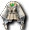

洋裝｜變裝｜泳裝｜鏡之城｜迪姆萊特系｜雷歐加爾特｜斯科爾菲吉｜其他
名稱為橘色的是可以附魔的物品。另外，未鑑定名稱是該道具在未鑑定狀態下的名稱。
提供情報或編輯請求，請到情報提供公佈欄、編輯公佈欄。
洋裝
| 名稱 | 價格 | 限制 | 職業 | Wei | 取得方式 |
 婚紗 婚紗 | 2,000,000 | Lv51,FLv21 | 戰修盜騎阿聖魔預吟 | 2 | 伊卡洛斯：婚禮會場 |
| 能力 | 結婚時必須穿著 |
| 名稱 | 價格 | 限制 | 職業 | Wei | 取得方式 |
 黑色花朵禮服 黑色花朵禮服 | 2,000,000 | Lv51,FLv21 | 戰修盜騎阿聖魔預吟 | 2 | 伊卡洛斯：婚禮會場 |
| 能力 | 婚禮服 |
| 名稱 | 價格 | 限制 | 職業 | Wei | 取得方式 |
| 血色花朵禮服 | 2,000,000 | Lv51,FLv21 | 戰修盜騎阿聖魔預吟 | 2 | 伊卡洛斯：婚禮會場 |
| 能力 | 婚禮服 |
變裝
| 名稱 | 價格 | 限制 | 職業 | Wei | 取得方式 |
 女武士皮甲？ 女武士皮甲？ | 100,000 | Lv31,FLv10 | 戰修盜騎阿聖魔預吟 | 5 | 魯克西翁：鐵匠鋪 |
| 能力 | 可以體驗戰士心情的衣服 |
| 名稱 | 價格 | 限制 | 職業 | Wei | 取得方式 |
 女拳法裝？ 女拳法裝？ | 100,000 | Lv31,FLv10 | 戰修盜騎阿聖魔預吟 | 5 | 魯克西翁：鐵匠鋪 |
| 能力 | 可以體驗修道士心情的衣服 |
| 名稱 | 價格 | 限制 | 職業 | Wei | 取得方式 |
 女偵察服？ 女偵察服？ | 100,000 | Lv31,FLv10 | 戰修盜騎阿聖魔預吟 | 5 | 魯克西翁：鐵匠鋪 |
| 能力 | 可以體驗盜賊心情的衣服 |
| 名稱 | 價格 | 限制 | 職業 | Wei | 取得方式 |
 修女服？ 修女服？ | 100,000 | Lv31,FLv10 | 戰修盜騎阿聖魔預吟 | 5 | 魯克西翁：鐵匠鋪 |
| 能力 | 可以體驗聖職者心情的衣服 |
| 名稱 | 價格 | 限制 | 職業 | Wei | 取得方式 |
 女魔導士之袍？ 女魔導士之袍？ | 100,000 | Lv31,FLv10 | 戰修盜騎阿聖魔預吟 | 5 | 魯克西翁：鐵匠鋪 |
| 能力 | 可以體驗魔術師心情的衣服 |
| 名稱 | 價格 | 限制 | 職業 | Wei | 取得方式 |
 聖潔女騎士甲？ 聖潔女騎士甲？ | 100,000 | Lv31,FLv10 | 戰修盜騎阿聖魔預吟 | 5 | 藍寶石波特騎士 |
| 能力 | 可以體驗騎士心情的衣服 |
| 名稱 | 價格 | 限制 | 職業 | Wei | 取得方式 |
 傳說之女服？ 傳說之女服？ | 100,000 | Lv31,FLv10 | 戰修盜騎阿聖魔預吟 | 5 | 藍寶石波特騎士 |
| 能力 | 可以體驗吟遊詩人心情的衣服 |
泳裝
| 名稱 | 價格 | 限制 | 職業 | Wei | 取得方式 |
 灰色西裝 灰色西裝 | 1,000 | Lv1,FLv5 | 戰修盜騎阿聖魔預吟 | 0 | 伊卡洛斯：雜貨店海灘斯普林特:獨眼怪海灘斯普林特:瘋狂獨眼怪海灘斯普林特:奈特梅爾 |
| 能力 | AC-1、MC-1 |
| 備註 | 泳裝、比基尼(灰) 海灘斯普林特 |
| 名稱 | 價格 | 限制 | 職業 | Wei | 取得方式 |
| 草莓西裝 | 1,000 | Lv1,FLv5 | 戰修盜騎阿聖魔預吟 | 0 | 依卡魯斯：雜貨店 |
| 能力 | AC-2、MC-2 |
| 備註 | 泳裝、比基尼(紅) 海灘斯普林特 |
| 名稱 | 價格 | 限制 | 職業 | Wei | 取得方式 |
| 粉紅西裝 | 1,000 | Lv1,FLv5 | 戰修盜騎阿聖魔預吟 | 0 | 德雷薩 |
| 能力 | AC-3、MC-3 |
| 備註 | 海灘斯普林特 |
| 名稱 | 價格 | 限制 | 職業 | Wei | 取得方式 |
| 藍朋友西裝 | 1,000 | Lv1,FLv5 | 戰修盜騎阿聖魔預吟 | 0 | |
| 能力 | AC-4、MC-4 |
| 備註 | 海灘斯普林特 |
| 名稱 | 價格 | 限制 | 職業 | Wei | 取得方式 |
| 森林樹西裝 | 1,000 | Lv1,FLv5 | 戰修盜騎阿聖魔預吟 | 0 |  珀普卡德曼 珀普卡德曼 |
| 能力 | AC-5、MC-5 |
| 備註 | 海灘斯普林特 |
| 名稱 | 價格 | 限制 | 職業 | Wei | 取得方式 |
| 紫色淑女西裝 | 1,000 | Lv1,FLv5 | 戰修盜騎阿聖魔預吟 | 0 | 強大三角龍 |
| 能力 | AC-6、MC-6 |
| 備註 | 海灘斯普林特 |
| 名稱 | 價格 | 限制 | 職業 | Wei | 取得方式 |
| 洛綠西裝 | 1,000 | Lv1,FLv5 | 戰修盜騎阿聖魔預吟 | 0 | |
| 能力 | AC-7、MC-7 |
| 備註 | 海灘斯普林特 |
| 名稱 | 價格 | 限制 | 職業 | Wei | 取得方式 |
| 檸檬茶西裝 | 1,000 | Lv1,FLv5 | 戰修盜騎阿聖魔預吟 | 0 | |
| 能力 | AC-8、MC-8 |
| 備註 | 海灘斯普林特 |
| 名稱 | 價格 | 限制 | 職業 | Wei | 取得方式 |
| 血奈特西裝 | 1,000 | Lv1,FLv5 | 戰修盜騎阿聖魔預吟 | 0 | 公會城地城2 |
| 能力 | AC-9、MC-9 |
| 備註 | 海灘斯普林特 |
| 名稱 | 價格 | 限制 | 職業 | Wei | 取得方式 |
| 天堂藍西裝 | 1,000 | Lv1,FLv5 | 戰修盜騎阿聖魔預吟 | 0 | |
| 能力 | AC-10、MC-10 |
| 備註 | 海灘斯普林特 |
| 名稱 | 價格 | 限制 | 職業 | Wei | 取得方式 |
| 洛粉紅西裝 | 1,000 | Lv1,FLv5 | 戰修盜騎阿聖魔預吟 | 0 | |
| 能力 | AC-11、MC-11 |
| 備註 | 海灘斯普林特 |
| 名稱 | 價格 | 限制 | 職業 | Wei | 取得方式 |
| 黑色西裝 | 1,000 | Lv1,FLv5 | 戰修盜騎阿聖魔預吟 | 0 | |
| 能力 | AC-12、MC-12 |
| 備註 | 海灘斯普林特 |
| 名稱 | 價格 | 限制 | 職業 | Wei | 取得方式 |
| 白色西裝 | 1,000 | Lv1,FLv5 | 戰修盜騎阿聖魔預吟 | 0 | 圖尼 |
| 能力 | AC-13、MC-13 |
| 備註 | 海灘斯普林特 |
其他
| 名稱 | 價格 | 限制 | 職業 | Wei | 取得方式 |
 女用聖誕老人服 女用聖誕老人服 | 10,000 | Lv31 | 戰修盜騎阿聖魔預吟 | 10 | Q;聖誕老人服結束後，可購買 |
| 能力 | AC-10、MC-10 |
| 備註 | 聖誕老人女學員穿的聖誕老人訓練服 |
| 名稱 | 價格 | 限制 | 職業 | Wei | 取得方式 |
 艾莉絲服 艾莉絲服 | 8,000 | Lv51 | 戰修盜騎阿聖魔預吟 | 15 |  裝備彩券 裝備彩券 |
| 能力 | AC-20、MC-20 |
| 備註 | 名為艾莉絲的少女的衣服。不可被外表迷惑。 |
| 名稱 | 價格 | 限制 | 職業 | Wei | 取得方式 |
 舞姬之衣 | 0 | Lv51 | 戰修盜騎阿聖魔預吟 | 9 | 怨靈術士:滿月的櫻花村 |
| 能力 | AC-24、MC-26、SAR1%、HP+30 +OP附魔 |
| 備註 | 麻痺防禦服驅除惡鬼的舞姬衣服。有2週期限。 |
| 名稱 | 價格 | 限制 | 職業 | Wei | 取得方式 |
 女忍之衣 女忍之衣 | Lv51 | 戰修盜騎阿聖魔預吟 | 16 | (忘卻的)怨靈術士:滿月的櫻花村 | |
| 能力 | AC-31、MC-19、AAR1%、HP+30 +OP附魔 |
| 備註 | 麻痺防禦服為了方便活動而設計的美麗衣裳。有2週期限。 |
| 名稱 | 價格 | 限制 | 職業 | Wei | 取得方式 |
| 復仇者戰衣 | Lv71,FLv15 | 戰修盜騎阿聖魔預吟 | 6 | | |
| 能力 | AC-30、MC-15、AAR8%、SAR8%、HP50、SP50 |
| 備註 | 細緻重現偉大魔術師所穿衣服的衣服。魔法的效果使迴避率提升。與聖誕老人服一樣，穿著時武器會被強制卸下。另外，無法使用技能、魔法。 |
| 名稱 | 價格 | 限制 | 職業 | Wei | 取得方式 |
 賽帕鎖甲 賽帕鎖甲 | 200,000 | Lv91,FLv21 | 戰修盜騎阿聖魔預吟 | 10 | 諾克斯要塞任務獎勵 |
| 能力 | AC-38、MC-25、AAR10%、SAR10%、HP50、SP50 |
| 備註 | 梅德尼亞大陸的怪物所穿的被詛咒的西裝。蘊含強大的瑪那之力。 |
| 名稱 | 價格 | 限制 | 職業 | Wei | 取得方式 |
 賽帕長袍 賽帕長袍 | 200,000 | Lv91,FLv21 | 戰修盜騎阿聖魔預吟 | 7 | 諾克斯要塞任務獎勵 |
| 能力 | AC-25、MC-38、AAR+10、SAR+10、HP+30、MP+70 |
| 備註 | 梅德尼亞大陸的怪物所穿的被詛咒的西裝。蘊含強大的瑪那之力。 |
鏡之城
鎧甲
| 名稱 | 價格 | 限制 | 職業 | Wei | 取得方式 |
 [女](忘卻)格里馬林鎧甲 [女](忘卻)格里馬林鎧甲 | 59,600 | Lv91,FLv31 | 戰修盜騎阿聖魔預吟 | 23 | 鏡之空間 |
| 能力 | AC-41、MC-28、HP70 |
| 備註 | 完成使命、快要消失的衣服。3天內或死亡時消失。不可染色、有專屬 |
| 名稱 | 價格 | 限制 | 職業 | Wei | 取得方式 |
| [女]格里馬林鎧甲 | 596,000 | Lv93,FLv41 | 戰修盜騎阿聖魔預吟 | 25 | 鏡之空間 |
| 能力 | AC-39、MC-26、HP70 |
| 備註 | 完成使命、快要消失的鎧甲。過30天就會消失。升級的話可以延長鎧甲的壽命。不可染色 |
| 名稱 | 價格 | 限制 | 職業 | Wei | 取得方式 |
| [女]閃耀鎧甲 | - | Lv103,FLv51 | 戰修盜騎阿聖魔預吟 | 25 | |
| 能力 | AC-45 MC-32 HP90 |
| 備註 | 格里馬林鎧甲的升級型態。可以再升級來覺醒道具的能力。不可染色 |
| 名稱 | 價格 | 限制 | 職業 | Wei | 取得方式 |
| [女]眩光鎧甲 | - | Lv113,FLv- | 戰修盜騎阿聖魔預吟 | - | |
| 能力 | - |
| 備註 | - |
長袍
| 名稱 | 價格 | 限制 | 職業 | Wei | 取得方式 |
 [女](忘卻)格里馬林長袍 [女](忘卻)格里馬林長袍 | 59,600 | Lv91,FLv31 | 戰修盜騎阿聖魔預吟 | 15 | 鏡之空間2 |
| 能力 | AC-33、MC-37、HP30、MP30 |
| 備註 | 完成使命、快要消失的衣服。3天內或死亡時消失。不可染色、有專屬 |
| 名稱 | 價格 | 限制 | 職業 | Wei | 取得方式 |
| [女]格里馬林長袍 | - | Lv93,FLv41 | 戰修盜騎阿聖魔預吟 | 17 | |
| 能力 | AC-31、MC-35、HP30、MP30 |
| 備註 | - |
| 名稱 | 價格 | 限制 | 職業 | Wei | 取得方式升級 |
| [女]閃耀長袍 | - | Lv103,FLv51 | 戰修盜騎阿聖魔預吟 | 17 |  升級 升級 |
| 能力 | AC-39、MC-41、HP60、MP60 |
| 備註 | 格里馬林長袍的升級型態。可以再升級來覺醒道具的能力。 染色？ 無專屬 可交易 |
| 名稱 | 價格 | 限制 | 職業 | Wei | 取得方式 |
| [女]眩光長袍 | - | Lv113,FLv- | 戰修盜騎阿聖魔預吟 | - | |
| 能力 | - |
| 備註 | - |
迪姆萊特系
短衫
| 名稱 | 價格 | 限制 | 職業 | Wei | 取得方式 |
| 忘卻的幽光短衫 | 12,000 | Lv100,FLv71VLv41,BLv41 | 戰修盜騎阿聖魔預吟 | 23 |  迪奧特、幻影騎士 迪奧特、幻影騎士 |
| 能力 | AC-43、MC-36、AAR4%、HP100、SP80 |
| 備註 | 以微微發光的魔石加工製成的女性用衣服，死亡時消失。死亡時消失 不可交易、不可放置地面 |
| 名稱 | 價格 | 限制 | 職業 | Wei | 取得方式 |
| 幽光短衫 | - | Lv100,FLv71VLv41,BLv41 | 戰修盜騎阿聖魔預吟 | 23 | |
| 能力 | AC-43、MC-36、AAR4%、HP100、SP80 |
| 備註 | 不可染色 |
| 名稱 | 價格 | 限制 | 職業 | Wei | 取得方式 |
| 魯尼克短衫 | - | Lv105,FLv81VLv51,BLv51 | 戰修盜騎阿聖魔預吟 | 25 | |
| 能力 | AC-46、MC-36、AAR5%、HP130、SP100 |
| 備註 | 以魔石之力增加其光輝的女性用衣服，為擅長近距離攻擊的職業專用加工而成。不可染色不可交易、不可放置地面 |
| 名稱 | 價格 | 限制 | 職業 | Wei | 取得方式 |
 迪卡魯尼克短衫 迪卡魯尼克短衫 | - | Lv110,FLv91VLv61,BLv61 | 戰修盜騎阿聖魔預吟 | 28 | |
| 能力 | AC-49、MC-37、AAR6%、HP150、SP120 |
| 備註 | 解放魔石所蘊藏全部力量的女性用衣服，為擅長近距離攻擊的職業專用加工而成。不可染色不可交易、不可放置地面 |
兜帽
| 名稱 | 價格 | 限制 | 職業 | Wei | 取得方式 |
| 忘卻的幽光兜帽袍 | 12,000 | Lv100,FLv71VLv41,BLv41 | 戰修盜騎阿聖魔預吟 | 17 |  暗影之魂 暗影之魂 |
| 能力 | AC-36、MC-43、SAR4%、HP100、MP80 |
| 備註 | 以微微發光的魔石加工製成的女性用衣服，死亡時消失。死亡時消失 不可交易、不可放置地面 |
| 名稱 | 價格 | 限制 | 職業 | Wei | 取得方式 |
| 幽光兜帽袍 | 72,000 | Lv100,FLv71VLv41,BLv41 | 戰修盜騎阿聖魔預吟 | 17 | |
| 能力 | AC-36 MC-43 SAR4% HP100 MP80 |
| 備註 | 以微微發光的魔石加工製成的女性用衣服,用魔石之力強化,可以升級為魯尼克套裝道具。不可染色 |
| 名稱 | 價格 | 限制 | 職業 | Wei | 取得方式 |
| 魯尼克兜帽 | 90,000 | Lv105,FLv81VLv51,BLv51 | 戰修盜騎阿聖魔預吟 | 19 | |
| 能力 | AC-38 MC-44 SAR5% HP130 MP100 |
| 備註 | 以魔力之力增加其光輝的女性用衣服,為擅長魔法攻擊的職業專用加工而成。不可染色 |
| 名稱 | 價格 | 限制 | 職業 | Wei | 取得方式 |
 迪卡魯尼克兜帽 迪卡魯尼克兜帽 | - | Lv-,FLv-VLv-,BLv- | 戰修盜騎阿聖魔預吟 | - | |
| 能力 | - |
雷歐加爾特的靈魂
鎖甲
| 名稱 | 價格 | 限制 | 職業 | Wei | 取得方式 |
 忘卻的雷歐加爾特女衫（女） 忘卻的雷歐加爾特女衫（女） | Lv105,FLv71VLv21,BLv21 | 戰修盜騎阿聖魔預吟 | 26 | | |
| 能力 | AC-53、MC-37、AAR4%、SAR3%、HP176、SP108 +OP附魔 |
| 備註 | 吸收了雷歐加爾特之力的衣服，死亡時消失。交易時專屬，可存銀行 |
| 名稱 | 價格 | 限制 | 職業 | Wei | 取得方式 |
| 被封印的雷歐加爾特女衫（女） | 172,000 | Lv105,FLv71VLv21,BLv21 | 戰修盜騎阿聖魔預吟 | 26 | |
| 能力 | AC-44、MC-35、AAR4%、SAR2%、HP70、SP70 +OP附魔 |
| 備註 | 封印了雷歐加爾特之力的衣服。交易時專屬，可存銀行 |
| 名稱 | 價格 | 限制 | 職業 | Wei | 取得方式 |
| 雷歐加爾特女衫（女） | 572,000 | Lv105,FLv71VLv21,BLv21 | 戰修盜騎阿聖魔預吟 | 26 | |
| 能力 | AC-51、MC-36、AAR4%、SAR3%、HP168、SP103 |
| 備註 | 吸收了雷歐加爾特之力的衣服。讓持有者寄宿雷歐加爾特之力。交易/使用時專屬 |
| 名稱 | 價格 | 限制 | 職業 | Wei | 取得方式 |
| （真）雷歐加爾特女衫（女） | 572,000 | Lv105,FLv71VLv21,BLv21 | 戰修盜騎阿聖魔預吟 | 26 | |
| 能力 | AC-52、MC-38、AAR5%、SAR4%、HP178、SP121 |
| 備註 | 吸收了雷歐加爾特之力的衣服。可以將寄宿在衣服上的雷歐加爾特之力發揮到極限。女性用。交易時專屬，可存銀行 |
長袍
| 名稱 | 價格 | 限制 | 職業 | Wei | 取得方式 |
 忘卻的雷歐加爾特兜帽袍（女） 忘卻的雷歐加爾特兜帽袍（女） | Lv105,FLv71VLv21,BLv21 | 戰修盜騎阿聖魔預吟 | 19 | | |
| 能力 | AC-37、MC-46、AAR2%、SAR4%、HP70、MP70 |
| 備註 | 吸收了雷歐加爾特之力的衣服，死亡時消失。交易時專屬，可存銀行 |
| 名稱 | 價格 | 限制 | 職業 | Wei | 取得方式 |
| 被封印的雷歐加爾特兜帽袍（女） | Lv105,FLv71VLv21,BLv21 | 戰修盜騎阿聖魔預吟 | - | | |
| 能力 | - |
| 備註 | - |
| 名稱 | 價格 | 限制 | 職業 | Wei | 取得方式 |
| 雷歐加爾特兜帽袍（女） | - | Lv105,FLv71VLv21,BLv21 | 戰修盜騎阿聖魔預吟 | 19 | |
| 能力 | AC-41、MC-48、AAR3%、SAR4%、HP96、MP110 |
| 備註 | 吸收了雷歐加爾特之力的衣服。寄宿雷歐加爾特之力。女性用。 |
| 名稱 | 價格 | 限制 | 職業 | Wei | 取得方式 |
| (真)雷歐加爾特兜帽袍（女） | Lv105,FLv71VLv21,BLv21 | 戰修盜騎阿聖魔預吟 | 19 | | |
| 能力 | AC-42 MC-50 AAR4 SAR4 HP113 MP121 |
| 備註 | 吸收了雷歐加爾特之力的衣服。可以將寄宿在衣服上的雷歐加爾特之力發揮到極限。女性用。 |
斯科爾菲吉